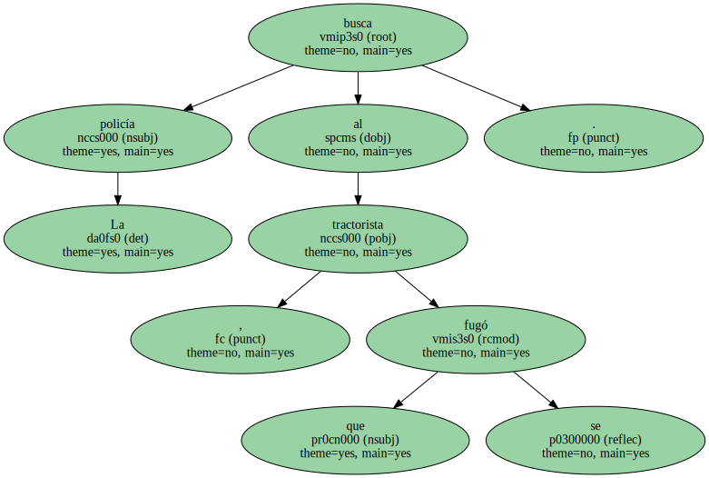
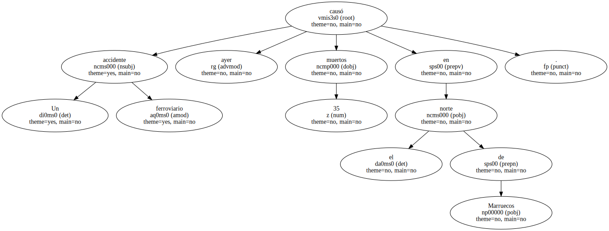
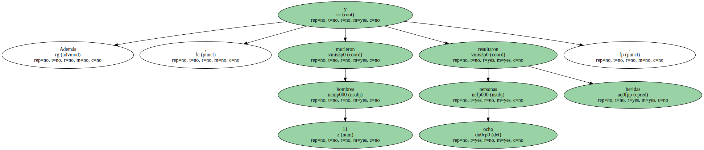
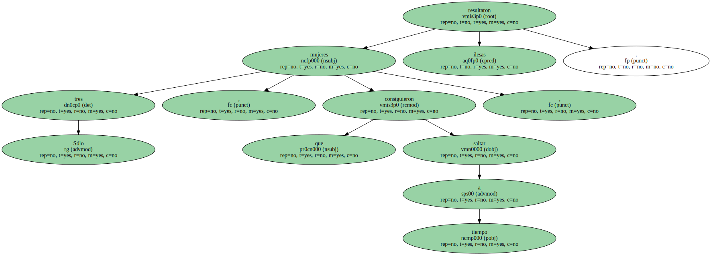
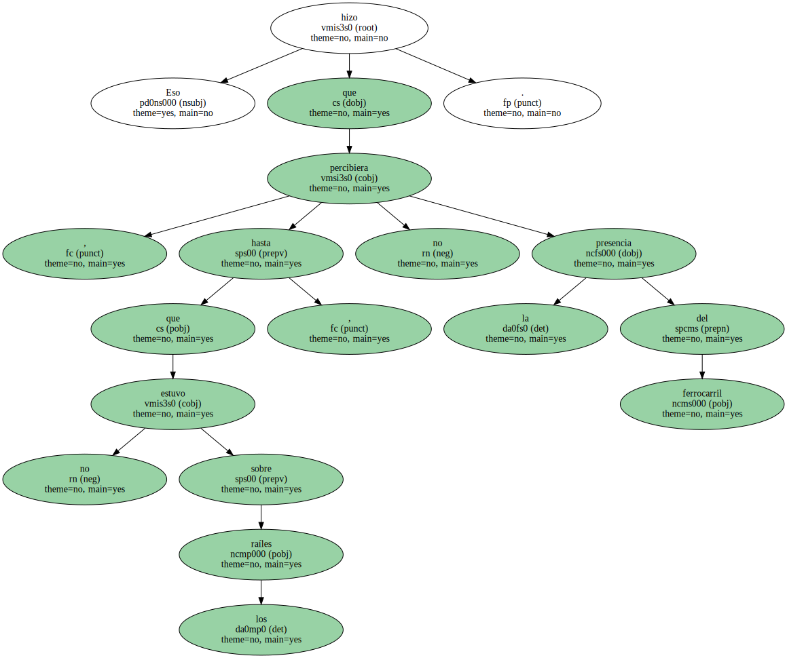
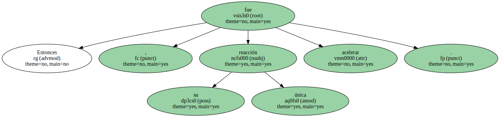
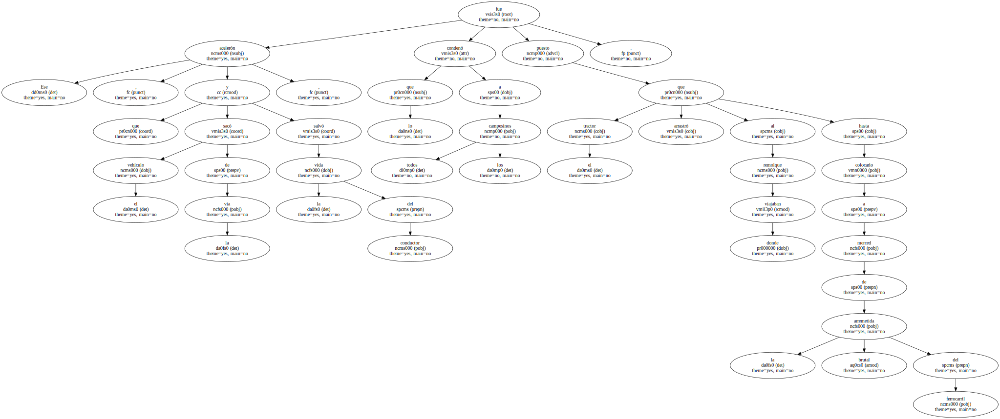
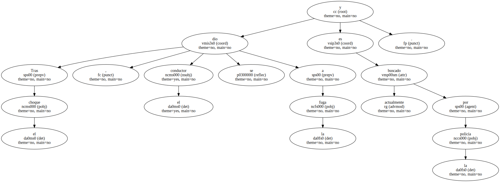

La policía busca al tractorista , que se fugó.
Un accidente ferroviario causó ayer 35 muertos en el norte de Marruecos.
La tragedia se produjo a las 8.35 horas de la mañana a 12 kilómetros de la ciudad de Alcazarquivir cuando un tren arrolló a un tractor en cuyo remolque viajaba un grupo de 46 hombres , mujeres y niñas que , como cada amanecer , se trasladaban desde sus pueblos a las explotaciones agrícolas donde trabajaban.

Entre las víctimas había 24 mujeres , algunas de las cuales eran niñas.

Además , murieron 11 hombres y ocho personas resultaron heridas.
Sólo tres mujeres , que consiguieron saltar a tiempo , resultaron ilesas.
El accidente se produjo después de que el conductor se decidiera a cruzar la vía del tren pese a la intensa niebla que cubría la zona.

Eso hizo que , hasta que no estuvo sobre los raíles , no percibiera la presencia del ferrocarril.
Entonces , su única reacción fue acelerar.
Ese acelerón , que sacó el vehículo de la vía y salvó la vida del conductor , fue lo que condenó a todos los campesinos puesto que el tractor arrastró al remolque donde viajaban hasta colocarlo a merced de la brutal arremetida del ferrocarril.
Tras el choque , el conductor se dio a la fuga y actualmente es buscado por la policía.
